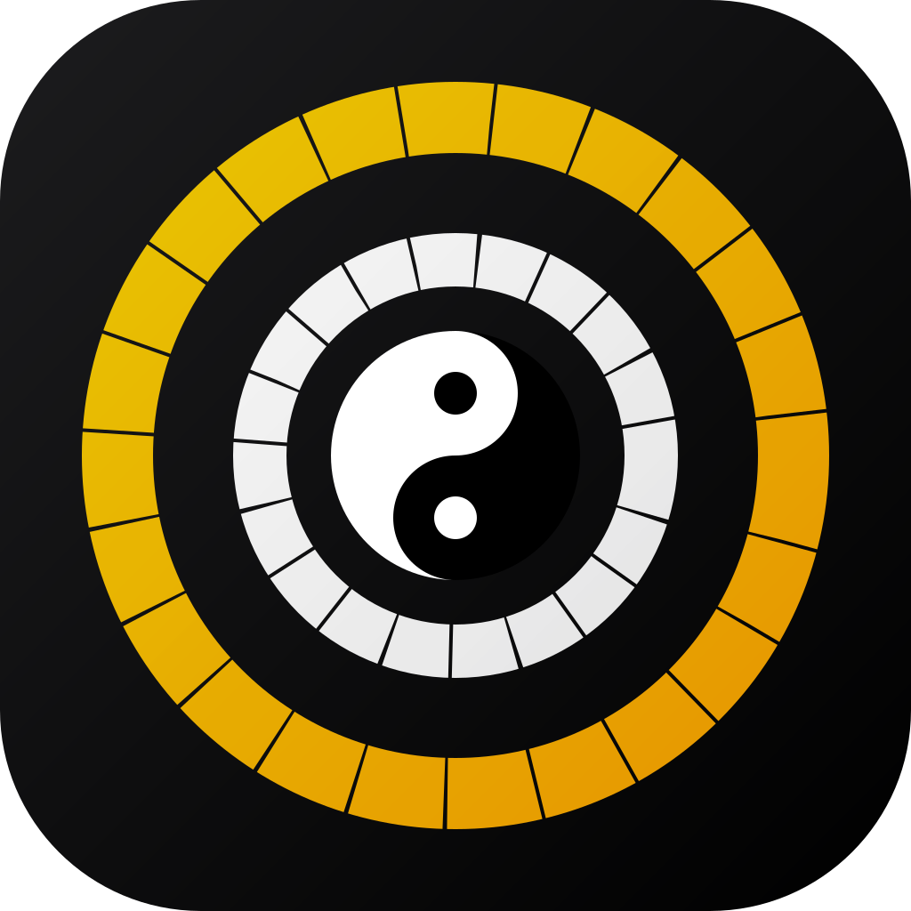

Traditional Chinese timekeeping, astrology, and philosophy — across iPhone, iPad, Mac, and Apple Watch.
Real-time circular clock showing the 12 traditional two-hour periods, Ke quarter-hour subdivisions, and Live Activity support for your Lock Screen.
Full lunar-solar conversion with Heavenly Stems and Earthly Branches (天干地支), the 60-year Sexagenary Cycle, and 24 Solar Terms with countdown.
Pre-Heaven and Post-Heaven Eight Trigrams, all 64 hexagrams with interpretations, and moon phase correlation with I Ching.
Meridian Organ Clock (子午流注) showing which organ is active at each Shichen, Five Elements system, and acupuncture timing principles.
Sunrise, sunset, moonrise, moonset via Apple WeatherKit. Moon phase with traditional Chinese lunar phase names.
Five Musical Notes (五音) with Tang Dynasty and Western equivalents. Twelve Pitch Scales (十二律呂) correlated with Earthly Branches.
Shichen, lunar date, solar term countdown, and more — on your Home Screen, Lock Screen, and Watch face.
Full-featured app with compact and regular size class layouts. Multiple widget sizes for every Home Screen configuration.
Menu bar extra showing current Shichen and date at a glance. Click to copy details for use anywhere.
Dedicated watch app with circular Shichen clock. Multiple complication types and organ-meridian reference on your wrist.
Adapt the app to your preference and region.
iPhone, iPad, Mac, and Apple Watch. Family Sharing supported.